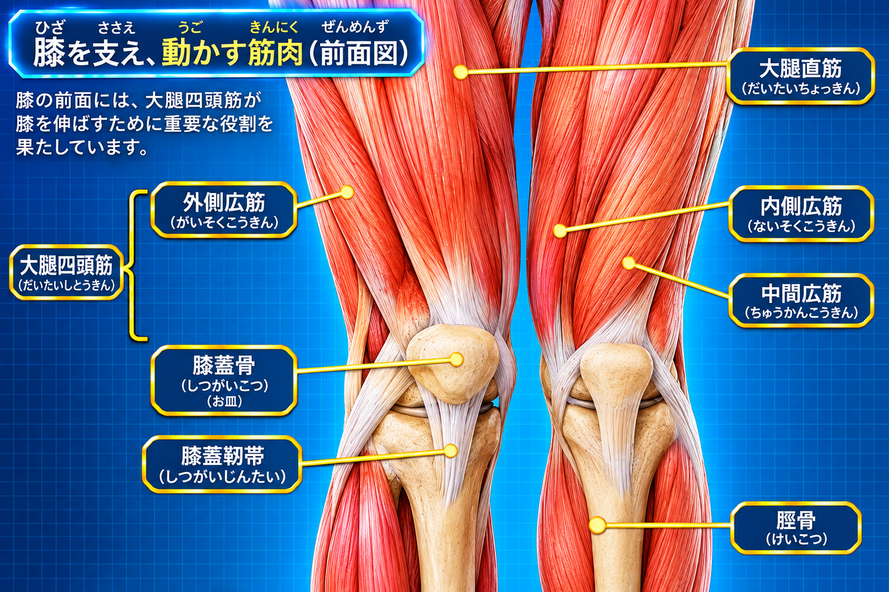
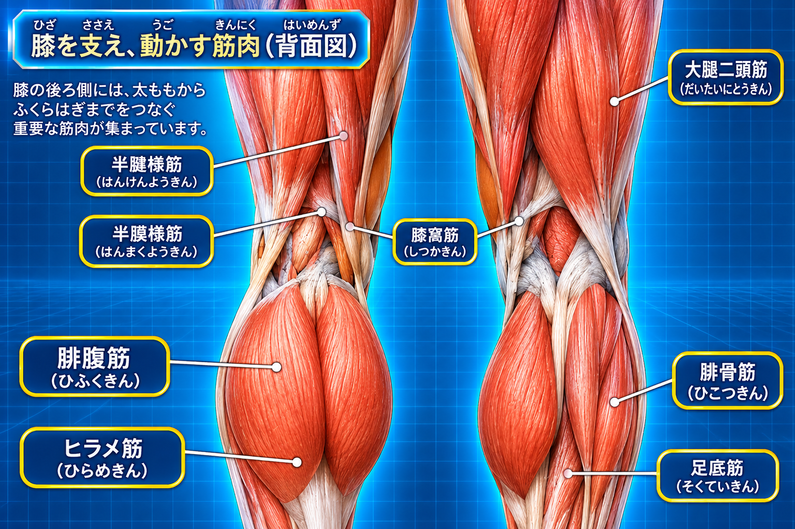

大腿骨
太ももの骨。下端の内側・外側の顆が脛骨と関節をつくり、荷重を受け止めます。
膝関節は人体の中でも大きな関節のひとつ。立つ・歩く・走る・しゃがむなど、日常の多くの動作で荷重を受けながら働きます。骨・軟骨・半月板・靭帯・筋肉が協調し、股関節や足首とも連動しています。
構造を知る ↓BODY EXPLORERへ ↗膝は主に大腿骨と脛骨の間にある「脛骨大腿関節」と、膝蓋骨と大腿骨の間にある「膝蓋大腿関節（PF関節）」から成ります。曲げ伸ばしを中心に、わずかな回旋も組み合わさる複合的な関節です。
太ももの骨。下端の内側・外側の顆が脛骨と関節をつくり、荷重を受け止めます。
すねの内側にある骨。大腿骨から伝わる荷重を足部へ伝える主要な骨です。
膝のお皿とも呼ばれる骨。大腿四頭筋腱の中にある種子骨で、膝を伸ばす力の伝達を助け、腱と骨の摩擦を軽減します。
膝の関節面は軟骨で覆われ、関節の間には内側・外側の半月板があります。これらの組織が、滑らかな動きと荷重の分散に関わります。
内側半月板と外側半月板は、大腿骨と脛骨の間にある線維軟骨です。関節面の適合性を高め、荷重を広く分散し、衝撃の緩和や関節の安定性に関わります。
関節軟骨は骨の表面を覆い、関節が動く際の摩擦を少なくします。軟骨や半月板の状態は、年齢や活動量、外傷などさまざまな要因と関係します。
骨の関節面を覆う滑らかな組織で、関節運動時の摩擦を減らします。
膝の内側と外側に位置し、荷重の分散や関節の適合性に関わります。
膝には複数の靭帯があり、骨同士をつなぎ、動きの方向や安定性を支えています。
大腿骨と脛骨をつなぎ、脛骨が前方へ大きく移動することや、膝の回旋の制御に関わります。
脛骨が後方へ大きく移動することを抑え、膝関節の安定性を支えます。
膝の内側を支え、外反ストレスを抑えます。深部線維は内側半月板や関節包とも連続しています。
膝の外側を支え、内反ストレスを抑えます。腓骨頭に付着します。
膝の痛みや腫れ、ロッキング、膝崩れ、外傷後の強い症状がある場合は、自己判断せず医療機関で評価を受けてください。
膝の曲げ伸ばしには太ももの筋肉が大きく関わります。股関節や足首をまたぐ筋肉も、歩行や姿勢の中で膝の動きに影響します。


太ももの前側にある筋群。膝を伸ばす働きに関わり、立ち上がりや階段動作を支えます。
太ももの後ろ側にある筋群。膝を曲げる働きや、股関節を伸ばす動きに関わります。
ふくらはぎの表層にある筋肉。足首を底屈させるほか、膝関節をまたいで膝の動きにも関わります。
膝の後方に位置する小さな筋肉。膝の曲げ始めや回旋の調整に関わります。
縫工筋・薄筋・半腱様筋の腱が脛骨近位内側に集まり、鵞足を形成します。股関節と膝の動き、膝内側の安定に関わります。
大腿筋膜張筋などにつながる腸脛靭帯は太ももの外側を走り、膝外側の安定や下肢の動きに関係します。腸脛靭帯は筋肉ではなく、筋膜が厚くなった線維性の組織です。
膝は単純な蝶番のように動くだけではありません。曲げ伸ばしに伴って、関節面の転がりや滑り、わずかな回旋が組み合わさります。
膝を曲げる・伸ばす動き。関節可動域の参考値は屈曲130°・伸展0°です。これは一律の正常値ではなく、年齢・個人差・測定肢位などで変わります。
立つ・歩く・着地する際、膝は股関節や足首と協調しながら荷重を受け止めます。
膝を曲げた状態では、脛骨と大腿骨の間に内旋・外旋の動きが生じます。
膝を伸ばしきる局面では、大腿骨と脛骨の形状や靭帯の張力などにより一定の回旋が生じ、関節が安定した伸展位へ導かれます。
膝の動きは膝だけで完結しません。股関節・足首・足部、そして骨盤や体幹との連携が、立つ・歩く・しゃがむ動作を支えます。
太ももの向きや骨盤の動きが、膝の向きや荷重のかかり方に関係します。
足首の曲がりやすさは、しゃがむ・階段を下りる動作などに関わります。
足裏の接地や足部の動きは、地面からの力の受け止め方に関係します。
身体全体の重心移動や姿勢の調整を通じて、膝の使い方にも影響します。
膝の向きや足部の形には個人差があります。見た目だけで問題を決めつけず、動作や症状、生活背景を合わせて確認することが大切です。
参考資料：厚生労働省「関節運動の方向・参考可動域角度」／日本整形外科学会・日本リハビリテーション医学会「関節可動域表示ならびに測定法（2022年改訂）」。本ページは身体の仕組みを学ぶための一般情報であり、個別の診断・治療を目的とするものではありません。